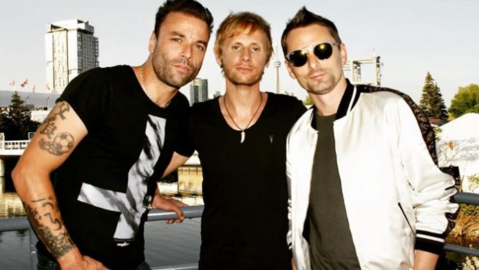
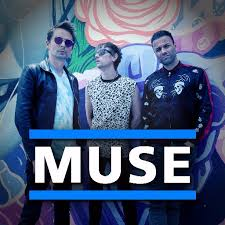

History
Muse es una banda británica de rock formada en 1994 Inglaterra. Desde su formación en la década de los 90, sus integrantes son: Matt Bellamy (compositor, voz, guitarra, teclados); Dominic Howard (batería, percusión); y Christopher Wolstenholme (bajo eléctrico, teclados, coros).12 Tras el lanzamiento Black Holes and Revelations, Morgan Nicholls comenzó a colaborar con la banda durante las presentaciones en vivo, haciéndose cargo de teclados, samples, de algunos coros, rara vez del bajo y últimamente de la segunda guitarra.34 La banda es conocida por sus extravagantes espectáculos en vivo, por fusionar géneros musicales como el rock alternativo, rock espacial, rock progresivo, rock sinfónico y electrónica,5 además por los atípicos interéses de Bellamy en la conspiración global, la revolución, la astrofísica, vida extraterrestre, pensamientos humanos y la idea de un fin del mundo simbólico; temas que se ven reflejados en sus letras.2 Muse ha lanzado siete álbumes de estudio: Showbiz (1999), Origin of Symmetry (2001).Absolution (2003), Black Holes and Revelations (2006), The Resistance (2009), The 2nd Law (2012) y Drones (2015). También han publicado tres álbumes en vivo: Hullabaloo Soundtrack (2002), el cual también contiene una compilación de lados B; HAARP (2008), que documenta las presentaciones de la banda en el Estadio de Wembley en 2007; y Live at Rome Olympic Stadium (2013), una presentación de la banda ante más de 60 000 personas en Italia. Black Holes and Revelations le otorgó a Muse una nominación al Mercury Prize y un tercer lugar en la lista de sus mejores álbumes del año según la revista NME en 2006. Muse también ganó diversos premios a lo largo de su carrera, incluyendo cinco MTV Europe Music Awards, seis Q Awards, ocho NME Awards, dos Brit Awards (premio a la «mejor actuación británica en vivo» dos veces, un MTV Video Music Award, cuatro Kerrang! Awards y un American Music Award. También fueron nominados para cinco Premios Grammy, donde ganaron en la categoría mejor álbum de rock en 2011, por su quinto álbum de estudio The Resistance (2009), siendo también ganadores del mismo premio por Drones en el 2015. Formación y primeros años (1992-1997)[editar] Los miembros de Muse se desempeñaron en diferentes bandas durante su estancia en Teignmouth Community College y Coombeshead College a principios de 1990. Matt Bellamy tocaba en una banda llamada Carnage Mayhem y Dominic Howard en Gothic Plague. Ambos asistían al mismo colegio y se hicieron amigos. Para diciembre de 1992, Bellamy abandonó su banda por pensar que «no era tan cool como la de Dominic», al mismo tiempo, Howard le pidió reemplazar al guitarrista que había abandonado. Tiempo después y tras varios cambios en la banda (la salida del vocalista y otros miembros) le pidieron a Chris Wolstenholme que aprendiera a tocar el bajo para unírseles. Wolstenholme estuvo de acuerdo y tomó lecciones. En 1994, el grupo, bajo el nombre Rocket Baby Dolls y con una imagen goth/glam, ganó una competencia de bandas locales, destrozando a sus equipos en el proceso.6 «Se suponía que iba a ser una protesta, una declaración», dijo Bellamy, «así que, cuando realmente ganamos, fue una verdadera sorpresa. Una enorme conmoción. Después de eso comenzamos a tomarnos en serio a nosotros mismos». Poco después, los tres decidieron renunciar a la universidad, dejar sus puestos de trabajo, cambiaron el nombre de la banda a Muse (1994-1995), y alejarse de Teignmouth. Primeros EP y Showbiz (1998-2000)[editar]  Logotipo de Muse, incorporado desde el lanzamiento de su primer EP, Muse, en 1998. Después de unos pocos años construyendo una base de seguidores, Muse hizo sus primeros conciertos en Londres y Mánchester. La banda tuvo una importante reunión con Dennis Smith, dueño de Sawmills Studio, situado en un antiguo molino de agua en Cornwall. Esta reunión dio lugar a su primera grabación satisfactoria y el lanzamiento de su primer EP con una portada diseñada por Howard. Su segundo EP, Muscle Museum, llegó al número tres en la lista de sencillos indie del Reino Unido y atrajo la atención del locutor de radio británico Steve Lamac así como de la publicación semanal de música NME. Gerard Way presentó a la banda a Safta Jaffery con quien recientemente había iniciado el sello Taste Media.7 Muse firmó con  Smith y Jaffery y grabó sus tres primeros álbumes, Showbiz, Origin of Symmetry y Absolution.7 A pesar del éxito de su segundo EP, las compañías discográficas británicas se mostraron reticentes a contratar a Muse. Fue después de un viaje al Festival CMJ de Nueva York, un sello discográfico de Estados Unidos los llevó a Los Ángeles para mostrarlos. Nanci Walker, entonces Sra. Directora de A&R de Columbia Records, llevó a Muse a los Estados Unidos para presentarse ante el entonces Vicepresidente Senior de A&R de Columbia, Tim Devine, así como ante el productor estadounidense Rick Rubin. Fue durante este viaje, el 24 de diciembre de 1998, que Muse firmó un acuerdo con Maverick Records. A su regreso de América, Taste Media arregló contratos de Muse con diversos sellos discográficos en Europa y Australia, que les permitió mantener el control sobre su carrera en los distintos países. John Leckie produjo el primer disco de la banda, Showbiz. El álbum mostró el estilo suave de la banda, y las letras hacen referencia a las relaciones humanas y las dificultades que habían encontrado al tratar de establecerse en Teignmouth. El lanzamiento de este álbum fue seguido por giras como teloneros de Red Hot Chili Peppers y Foo Fighters en los Estados Unidos.